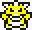
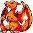
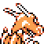
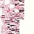

GlitchDexDE/Y:199
From Glitch City Wiki
Jump to navigationJump to search| u  | |
| Front: Back:  | |
| Bulbapedia link | None |
| Equivalent glitch Pokémon | ♀pゥ îゥ îゥY (German Red/Blue) |
| Generation II equivalent | |
| Generation II Pokémon needed for Time Capsule exploit | |
| Name bytes | 48 1F 48 06 49 B4 48 4B 48 06 50 |
| Index number (hex) | C7 |
| Index number (dec) | 199 |
| Pokédex number (Family) |
006 |
| Pokédex marker byte | |
| Pokédex flag (seen) | |
| Pokédex flag (own) | |
| Type(s) | Fire Flying |
| Category | 'm99 |
| Height | 2.3m |
| Weight | 37.4kg |
| Palette attribute byte | |
| Catch rate constant | |
| Experience group | |
| Experience yield | |
| Sprite dimensions (base data) | |
| Front sprite source pointer | |
| Back sprite source pointer | |
| Front sprite dimensions (actual) | |
| Back sprite dimensions (actual) | |
| ← Previous glitch Pokémon | Current glitch Pokémon | Next glitch Pokémon → |
|---|---|---|
| ァ7 ô g (C6) | u (C7) | g g (C8) |
u is a glitch Pokémon in Pokémon Yellow (German). It is a hybrid of Charizard.
Contents
Methods to obtain
Research is incomplete at this time
Starting moves
- Scratch
- Growl
- Ember
- Leer
Evolution(s)
u |
Level 61 → |
 y' ô + ô ゥ(EA) |
Pokédex data
Level-up moves
- TM 05 (Level 1)
- Glitch Move 0xC0 (Level 2)
- TM 25 (Level 5)
- Leer (Level 9)
- TM 05 (Level 10)
- Swords Dance (Level 18)
- Razor Wind (Level 19)
- Water Gun (Level 20)
- TM 05 (Level 30)
- TM 36 (Level 32)
- Constrict (Level 33)
- Tackle (Level 36)
- Wing Attack (Level 40)
- Horn Drill (Level 53)
- Glitch Move 0xAF (Level 55)
- Poison Sting (Level 60)
- TM 04 (Level 61)
- TM 55 (Level 62)
- Pay Day (Level 75)
- Tackle (Level 78)
- Thunder (Level 79)
- Glitch Move 0xC0 (Level 96)
- Horn Attack (Level 105)
- Whirlwind (Level 120)
- Aurora Beam (Level 137)
- Horn Drill (Level 152)
- Horn Drill (Level 160)
- TM 54 (Level 170)
- TM 40 (Level 172)
- TM 50 (Level 173)
- Glitch Move 0xC3 (Level 175)
- TM 41 (Level 193)
- Meditate (Level 198)
- TM 05 (Level 201)
- TM 05 (Level 204)
- TM 24 (Level 205)
- Double Kick (Level 207)
- TM 17 (Level 217)
- Pay Day (Level 222)
- Glitch Move 0xAB (Level 224)
- TM 50 (Level 225)
- Tackle (Level 229)
- Cut (Level 230)
- Aurora Beam (Level 234)
- Glitch Move 0xAA (Level 240)
- TM 50 (Level 247)
- Karate Chop (Level 254)
TM/HM moves
- HM 01 Cut
- HM 02 Fly
- HM 04 Strength
- TM 01 Mega Punch
- TM 03 Swords Dance
- TM 05 Mega Kick
- TM 06 Toxic
- TM 08 Body Slam
- TM 09 Take Down
- TM 10 Double-Edge
- TM 15 Hyper Beam
- TM 17 Submission
- TM 18 Counter
- TM 19 Seismic Toss
- TM 20 Rage
- TM 23 Dragon Rage
- TM 26 Earthquake
- TM 27 Fissure
- TM 28 Dig
- TM 31 Mimic
- TM 32 Double Team
- TM 33 Reflect
- TM 34 Bide
- TM 38 Fire Blast
- TM 39 Swift
- TM 40 Skull Bash
- TM 44 Rest
- TM 50 Substitute
Base stats
| Base stats | Level 50 stat range | Level 100 stat range |
|---|---|---|
| HP: 78 | 138-184 | 266-359 |
| Attack: 84 | 89-135 | 173-266 |
| Defense: 78 | 83-129 | 161-254 |
| Speed: 100 | 105-151 | 205-298 |
| Special: 85 | 90-136 | 175-268 |
| This article or section is a stub. You can help Glitch City Wiki wiki by expanding it. |